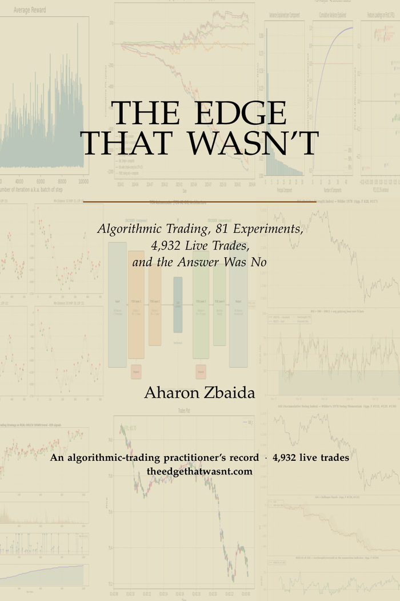

The Edge That Wasn't
Algorithmic Trading, 81 Experiments, 4,932 Live Trades, and the Answer Was No

Most books with "algorithmic trading" on the cover sell a system that prints money. This one hands you the losses. The central artifact of the book is a table of broker-verified results — its own — and the frozen snapshot of every recorded trade ships with it, so any per-strategy row reproduces from the raw file.
The trade ledger — every closed trade, 5,556 rows — is committed here: trades_snapshot_2026-05-31.csv. The raw S5 price history is not redistributable; the analysis scripts pull it from the OANDA v20 API. See Verify for what's in the file and how to query it.
It is the record of fx-core, a containerized retail FX research project. No single strategy ever ran on more than about a hundred dollars, and most on far less; roughly two hundred dollars was funded across the thirteen broker sub-accounts over the project's life, peaking near a hundred and ninety-nine. The methodology is the subject, not the size of the account.
One question runs through it: is there a repeatable, statistically real edge available to a retail trader in spot FX, and if so, is it large enough — after costs, after tail risk, after the capital required to hold open positions through their drawdowns — to beat a stock-index fund? Eighty-one audited experiments answer it: thirteen positive on their own terms, twenty-two mixed, forty-five negative, and one late survivor retracted.
The apparatus included a positive control — an instrument calibrated to prove it could detect a real edge before being trusted to report that there wasn't one — and it forced three published retractions on this book's own results. Both are documented here: the calibration and the corrections.
What the apparatus taught outlasts the trading. Pre-registration, a sealed out-of-sample set touched exactly once, a working taxonomy of lookahead bias, the coin-flip control that separates skill from luck, and the cost floors that sink most edges: a full research-methods spine, demonstrated on live results rather than lectured. It is meant to be useful to a data scientist or engineer who will never place a trade.
Get the book — Paperback, 578 pages, $29.99
Read an excerpt →The paperback is in Amazon’s review queue right now — the listing goes live within a day or two, and the buy link will appear here the moment it does. Kindle edition to follow.
Every number is checkable · star the repository to catch the release
Inside
- A live and paper strategy catalogue with a frozen snapshot of every recorded trade — the receipt behind every number in the book.
- The 9 rules of the apparatus — causality, sealed out-of-sample, Monte-Carlo, fill modeling, account modeling — and the specific failure each rule was written to prevent.
- The lookahead error that produced 55,000 pips of bad signals across sixteen strategies, and the root-cause analysis that followed.
- The negative-result library: thousands of backtests across twelve currency pairs and five and a half years of data, mapped by the structural reason each one failed.
- The momentum book that passed Monte-Carlo at a 100% rate, then was shown by a closeout-aware simulation to liquidate six of six accounts under finite margin.
- Zone Recovery: the martingale whose tail cannot be capped without killing the edge.
- The three walls — direction is unpredictable, volatility is forecastable, spread is the toll — and the narrow escape they leave open.
- The regime-gated mean-reversion that was the project's high-water mark — t = 2.25, p = 0.025 — and the Coda that retracts it at the premise: the daily rollover financing cost consumes the gross edge six times over.
- An indicator encyclopedia — 161 documented indicator variants in 148 family entries — with a visual reference panel computed on real EUR/USD M5 data, plus an interactive indicator viewer drawn on EUR/JPY and EUR/GBP M5.
- The power curve: known edges planted in real data to measure the smallest one the gates can see — the calibration behind every "no" in the book. Published here.
- The lookahead chapter that names the cost — 55,000 pips — and how a clean backtest can be pure fiction. Read it as the free excerpt.
"The positives are not victories in the usual sense. Several did not survive finite-margin re-validation once a realistic stop-loss was added; two worked in simulation but failed live execution; and the late-program successes are cost-accounting and risk-reduction findings, not edges."
— from the repository's experiment map. Three headline results were later retracted outright — the corrections are published here.
Occasional updates only — corrections and any post-book result that survives the gates: star the repository to follow, or open an issue there to reach the author.